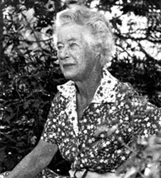

- When the mind opens
- A Wild Flower
| ‘Open your mind and the flowers will bloom,’ was advice Kathleen McArthur often gave, and this message is just as important now as it was during her long and productive life as a conservationist. |
| Photograph reproduced with permission of Hugh McArthur © WPSQ, Sunshine Coast & Hinterland Inc |
The weekender 3–9 December 2004
A WILD FLOWER
 Kathleen McArthur could have been dismissed as a wallflower, but was as hardy and vibrant as the Wallum country she protected. Jade Harrison pens an ode to the lady who saved entire Coast ecosystems.
Kathleen McArthur could have been dismissed as a wallflower, but was as hardy and vibrant as the Wallum country she protected. Jade Harrison pens an ode to the lady who saved entire Coast ecosystems.
[Photograph caption: Kathleen McArthur was a self-taught artist specialising in wildflower paintings. She was also an author of many books: The Bush in Bloom, Looking at Australian wild flowers, Queensland wildflowers, Living on the Coast, and Bread and dripping days.]
Kathleen McArthur was a conservation activist involved in the preservation of our Cooloola Shire more than 40 years ago, yet her dedication and efforts are relatively un-noticed and her name barely recognised by many of the Coast’s younger generation. Her early passion for the local area and pioneering conservation efforts have ensured that some of our beautiful local landmarks stay on the coastal map for good.
 Sandy white beaches skirted with casuarinas, rugged mountains and abundant wildlife––our pristine coastal landscapes are among the best in the world, and as victims of the fast-paced 21st century we often go about our busy day-to-day lives without stopping to smell the roses. This was exactly what Kathleen wanted to educate people about more than 40 years ago.
Sandy white beaches skirted with casuarinas, rugged mountains and abundant wildlife––our pristine coastal landscapes are among the best in the world, and as victims of the fast-paced 21st century we often go about our busy day-to-day lives without stopping to smell the roses. This was exactly what Kathleen wanted to educate people about more than 40 years ago.
‘Open your mind and the flowers will bloom,’ is advice the late Caloundra-based author, artist and conservationist Kathleen McArthur used to give to those that didn’t see the wildlife for what it is and, more importantly, didn’t see the need to protect it. Her passion for protecting Australian natives, namely wildflowers, is a legacy that is being carried on by modern day conservationists who consider her a pioneer in native conservation. It is almost as though she sensed the future human impact on the environment, back in the I950s and ‘60s when she started to actively work towards the preservation of the very landscapes that most of us now take for granted. Kathleen started a native plant nursery under her house to try to supply native plants to schools and local areas. During the ‘60s much of the Coast was being decimated for sand mining and to her disappointment dunes were being flattened and tidied up so people could see the sea.
The Sunshine Coast and Hinterland Wildlife Preservation Society secretary Jill Chamberlain says some of Kathleen’s campaigns took many years, and it was her strong personality and persistence that led to many successful outcomes. ‘She was a very determined, self-assertive woman; she wouldn’t let anybody stand in her way. She called a spade a spade and she had no trouble arguing with ministers or governments. She was an artist, a conservationist and she was definitely called a thorn in the side of government,’ Jill says. Her foresight and success in the preservation of areas such as Cooloola National Park and the successful lobbying for Pumicestone Passage to be included in the Register of the National Estate are among her local conservation accomplishments. Wildflower gardens are attributed to Kathleen in local schools and in 1996 she was given an honorary doctorate by James Cook University.
Kathleen’s shared vision for admiring and protecting local wildlife is a legacy that is carried on by the Wildlife Preservation Society of Queensland, which she co-founded in 1962. WPSQ is the state’s oldest, largest and most respected wildlife-focused conservation group.
Reproduced with permission of theweekender
© WPSQ, Sunshine Coast & Hinterland Inc